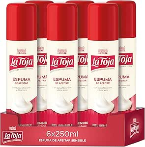

Creme de Barbear Proraso
Creme clássico em bisnaga com eucalipto e mentol. Espuma rica, refrescante e com o aroma tradicional das barbearias italianas.
Ver na Amazon.esEsta seleção junta cremes clássicos, espumas para pele sensível e produtos de preparação pré-barba para ajudar no conforto, hidratação e proteção da pele.
Creme clássico em bisnaga com eucalipto e mentol. Espuma rica, refrescante e com o aroma tradicional das barbearias italianas.
Ver na Amazon.es
Fórmula nutritiva que suaviza a pele e facilita o barbear. Ideal para peles secas ou sensíveis, com fragrância suave e textura cremosa.
Ver na Amazon.es
Creme pré-barba com aveia e chá verde, pensado para preparar a pele antes da lâmina e reduzir desconforto em peles mais sensíveis.
Ver na Amazon.es
Espuma de barbear pensada para pele sensível, com boa hidratação e aplicação rápida. Prática para quem prefere a rotina mais simples.
Ver na Amazon.es
Gel com espuma rápida que refresca, acalma e ajuda a proteger a pele da irritação durante o barbear, com enxaguamento fácil.
Ver na Amazon.es